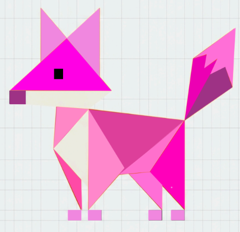

Practica 1: Robot
En esta actividad realizamos un trazo de un dibujo de un robot en el programa adobe Ilustraidor con la herramienta pluma, rectángulos y selección directa. Fue el primer trabajo que realizamos en este programa, fui aprendiendo a cómo usar mejor las herramientas mediante esta actividad aunque me confundía un poco.
Practica 2: oso
Realizamos un oso panda aquí, lo tuvimos que colorear y hacer con más figuras y más capas, este se me complicó más porque no sabía aún bien como usar el programa pero ahí fui viendo y lo pude realizar al final, igual también utilicé figuras y pluma para realizarlo y es el que más se me complicó.
Practica 3: leon
Fue el 3er trabajo que realizamos en este programa y ya fue más fluido el uso de las herramientas, realizamos un leon e igual lo teníamos que colorear y hacerlo con muchas capas, en mi caso fue así aunque igual me dio le batallé.

Examen: buo
Realizamos el examen del primer parcial y aquí me tocó realizar la figura de un zorro utilizando figuras y la herramienta pluma, lo pinte de rosa